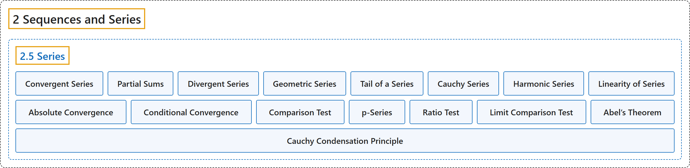

2.5 Series
Classification

Glossary
| Term | Definition | 中文翻译 | Source |
|---|---|---|---|
| 2.5 Series 级数 |
"Given a sequence \(\{ x_n \}_{n=1}^\infty\), we write the formal object \(\sum_{n=1}^\infty x_n\) and call it a series." | 给定序列 \(\{ x_n \}_{n=1}^\infty\)，我们写出形式对象 \(\sum_{n=1}^\infty x_n\)，并称之为级数。 | Lebl, 2026, Definition 2.5.1 |
| Convergent Series 收敛级数 |
"A series converges if the sequence \(\{ s_k \}_{k=1}^\infty\) defined by \(s_k := \sum_{n=1}^k x_n = x_1 + x_2 + \cdots + x_k\) converges." | 若由 \(s_k := \sum_{n=1}^k x_n = x_1 + x_2 + \cdots + x_k\) 定义的序列 \(\{ s_k \}_{k=1}^\infty\) 收敛，则级数收敛。 | Lebl, 2026, Definition 2.5.1 |
| Partial Sums 部分和 |
"The numbers \(s_k\) are called partial sums." | 数 \(s_k\) 称为部分和。 | Lebl, 2026, Definition 2.5.1 |
| Divergent Series 发散级数 |
"If the sequence \(\{ s_k \}_{k=1}^\infty\) diverges, we say the series is divergent." | 若序列 \(\{ s_k \}_{k=1}^\infty\) 发散，则称该级数是发散的。 | Lebl, 2026, Definition 2.5.1 |
| Geometric Series 几何级数 |
"Suppose \(-1 < r < 1\). Then the geometric series \(\sum_{n=0}^\infty r^n\) converges, and \(\sum_{n=0}^\infty r^n = \frac{1}{1-r}\)." | 设 \(-1 < r < 1\)，则几何级数 \(\sum_{n=0}^\infty r^n\) 收敛，且 \(\sum_{n=0}^\infty r^n = \frac{1}{1-r}\)。 | Lebl, 2026, Proposition 2.5.5 |
| Tail of a Series 级数的尾 |
"As with sequences, we can talk about a tail of a series." | 和序列一样，我们可以谈论级数的尾。 | Lebl, 2026, section 2.5 |
| Cauchy Series 柯西级数 |
"A series \(\sum_{n=1}^\infty x_n\) is said to be Cauchy or a Cauchy series if the sequence of partial sums \(\{ s_n \}_{n=1}^\infty\) is a Cauchy sequence." | 若部分和序列 \(\{ s_n \}_{n=1}^\infty\) 是柯西序列，则称级数 \(\sum_{n=1}^\infty x_n\) 是柯西的，或称为柯西级数。 | Lebl, 2026, Definition 2.5.7 |
| Harmonic Series 调和级数 |
"The series \(\sum_{n=1}^\infty 1/n\) diverges (despite the fact that \(\lim_{n\to\infty} 1/n = 0\)). This is the famous harmonic series." | 级数 \(\sum_{n=1}^\infty 1/n\) 发散（尽管 \(\lim_{n\to\infty} 1/n = 0\)）。这就是著名的调和级数。 | Lebl, 2026, Example 2.5.11 |
| Linearity of Series 级数的线性 |
"Let \(\alpha \in \mathbb{R}\) and \(\sum_{n=1}^\infty x_n\) and \(\sum_{n=1}^\infty y_n\) be convergent series. Then \(\sum_{n=1}^\infty \alpha x_n\) is a convergent series and \(\sum_{n=1}^\infty \alpha x_n = \alpha \sum_{n=1}^\infty x_n\). \(\sum_{n=1}^\infty ( x_n + y_n )\) is a convergent series and \(\sum_{n=1}^\infty ( x_n + y_n ) = \left( \sum_{n=1}^\infty x_n \right) + \left( \sum_{n=1}^\infty y_n \right)\)." | 设 \(\alpha \in \mathbb{R}\)，\(\sum_{n=1}^\infty x_n\) 与 \(\sum_{n=1}^\infty y_n\) 是收敛级数，则 \(\sum_{n=1}^\infty \alpha x_n\) 是收敛级数，且 \(\sum_{n=1}^\infty \alpha x_n = \alpha \sum_{n=1}^\infty x_n\)；\(\sum_{n=1}^\infty ( x_n + y_n )\) 是收敛级数，且 \(\sum_{n=1}^\infty ( x_n + y_n ) = \left( \sum_{n=1}^\infty x_n \right) + \left( \sum_{n=1}^\infty y_n \right)\)。 | Lebl, 2026, Proposition 2.5.12 |
| Absolute Convergence 绝对收敛 |
"A series \(\sum_{n=1}^\infty x_n\) converges absolutely if the series \(\sum_{n=1}^\infty \lvert x_n \rvert\) converges." | 若级数 \(\sum_{n=1}^\infty \lvert x_n \rvert\) 收敛，则称级数 \(\sum_{n=1}^\infty x_n\) 绝对收敛。 | Lebl, 2026, Definition 2.5.14 |
| Conditional Convergence 条件收敛 |
"If a series converges, but does not converge absolutely, we say it converges conditionally." | 若级数收敛但不绝对收敛，则称它条件收敛。 | Lebl, 2026, Definition 2.5.14 |
| Comparison Test 比较判别法 |
"Let \(\sum_{n=1}^\infty x_n\) and \(\sum_{n=1}^\infty y_n\) be series such that \(0 \leq x_n \leq y_n\) for all \(n \in \mathbb{N}\). If \(\sum_{n=1}^\infty y_n\) converges, then so does \(\sum_{n=1}^\infty x_n\). If \(\sum_{n=1}^\infty x_n\) diverges, then so does \(\sum_{n=1}^\infty y_n\)." | 设 \(\sum_{n=1}^\infty x_n\) 与 \(\sum_{n=1}^\infty y_n\) 是满足对所有 \(n \in \mathbb{N}\) 有 \(0 \leq x_n \leq y_n\) 的级数。若 \(\sum_{n=1}^\infty y_n\) 收敛，则 \(\sum_{n=1}^\infty x_n\) 也收敛；若 \(\sum_{n=1}^\infty x_n\) 发散，则 \(\sum_{n=1}^\infty y_n\) 也发散。 | Lebl, 2026, Proposition 2.5.16 |
| p-Series p 级数 |
"For \(p \in \mathbb{R}\), the series \(\sum_{n=1}^\infty \frac{1}{n^p}\) converges if and only if \(p > 1\)." | 对 \(p \in \mathbb{R}\)，级数 \(\sum_{n=1}^\infty \frac{1}{n^p}\) 收敛当且仅当 \(p > 1\)。 | Lebl, 2026, Proposition 2.5.17 |
| Ratio Test 比值判别法 |
"Let \(\sum_{n=1}^\infty x_n\) be a series, \(x_n \neq 0\) for all \(n\), and such that \(L := \lim_{n\to\infty} \frac{\lvert x_{n+1} \rvert}{\lvert x_n \rvert}\) exists. If \(L < 1\), then \(\sum_{n=1}^\infty x_n\) converges absolutely. If \(L > 1\), then \(\sum_{n=1}^\infty x_n\) diverges." | 设 \(\sum_{n=1}^\infty x_n\) 是级数，对所有 \(n\) 有 \(x_n \neq 0\)，且 \(L := \lim_{n\to\infty} \frac{\lvert x_{n+1} \rvert}{\lvert x_n \rvert}\) 存在。若 \(L < 1\)，则 \(\sum_{n=1}^\infty x_n\) 绝对收敛；若 \(L > 1\)，则 \(\sum_{n=1}^\infty x_n\) 发散。 | Lebl, 2026, Proposition 2.5.19 |
| Limit Comparison Test 极限比较判别法 |
"Prove the limit comparison test. That is, prove that if \(a_n > 0\) and \(b_n > 0\) for all \(n\), and \(0 < \lim_{n\to\infty} \frac{a_n}{b_n} < \infty\), then either \(\sum_{n=1}^\infty a_n\) and \(\sum_{n=1}^\infty b_n\) both converge or both diverge." | 证明极限比较判别法：若对所有 \(n\) 有 \(a_n > 0\) 和 \(b_n > 0\)，且 \(0 < \lim_{n\to\infty} \frac{a_n}{b_n} < \infty\)，则 \(\sum_{n=1}^\infty a_n\) 与 \(\sum_{n=1}^\infty b_n\) 要么都收敛，要么都发散。 | Lebl, 2026, Exercise 2.5.11 |
| Abel’s Theorem 阿贝尔定理 |
"Suppose \(\sum_{n=1}^\infty x_n\) is a series whose sequence of partial sums is bounded, \(\{ \lambda_n \}_{n=1}^\infty\) is a sequence with \(\lim_{n\to\infty} \lambda_n = 0\), and \(\sum_{n=1}^\infty \lvert \lambda_{n+1} - \lambda_n \rvert\) is convergent. Then \(\sum_{n=1}^\infty \lambda_n x_n\) is convergent." | 设级数 \(\sum_{n=1}^\infty x_n\) 的部分和序列有界，\(\{ \lambda_n \}_{n=1}^\infty\) 是满足 \(\lim_{n\to\infty} \lambda_n = 0\) 的序列，且 \(\sum_{n=1}^\infty \lvert \lambda_{n+1} - \lambda_n \rvert\) 收敛，则 \(\sum_{n=1}^\infty \lambda_n x_n\) 收敛。 | Lebl, 2026, Exercise 2.5.17 |
| Cauchy Condensation Principle 柯西凝聚判别法 |
"Suppose \(\{ x_n\}_{n=1}^\infty\) is a decreasing sequence of positive numbers. Prove the Cauchy condensation principle: \(\sum_{n=1}^\infty x_n \qquad \text{converges if and only if} \qquad \sum_{n=1}^\infty 2^n x_{2^n} \qquad \text{converges}.\)" | 设 \(\{ x_n\}_{n=1}^\infty\) 是递减的正数序列。证明柯西凝聚判别法：\(\sum_{n=1}^\infty x_n \qquad \text{converges if and only if} \qquad \sum_{n=1}^\infty 2^n x_{2^n} \qquad \text{converges}.\) | Lebl, 2026, Exercise 2.5.15 |
References
Lebl, J. (2026). Basic analysis I & II: Introduction to real analysis (May 22, 2026 edition). Retrieved October 29, 2026, from https://www.jirka.org/ra/html/